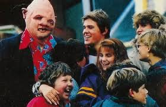

 Los Goonies son un grupo de amigos que viven en un pueblo costero del noroeste de Estados Unidos situado en la localidad de Astoria (Oregón), formado por "Mikey" (Sean Astin), "Brand" (Josh Brolin), "Gordi" (Jeff Cohen), "Data" (Jonathan Ke Quan), "Bocazas" (Corey Feldman), "Andy" (Kerri Green) y "Stef" (Martha Plimpton). Sus padres viven angustiados por las deudas y los acreedores pretenden derribar el vecindario donde viven para construir en su lugar un campo de golf. La firma del embargo es inminente y se llevará a cabo a los pocos días del comienzo de la historia.
Durante una tarde, los amigos, bastante desmotivados por la situación, suben al desván donde encuentran una gran variedad de objetos antiguos y extraños, propiedad del museo en el que trabaja el padre de Mikey y Brand. Entre ellos descubren un mapa que indica la ubicación de un supuesto tesoro perteneciente a un pirata conocido como "Willy El Tuerto", desaparecido con su tripulación siglos atrás mientras eran perseguidos por la armada británica después de que el pirata cometiese un gran robo. El legendario cazatesoros, Chester Copperpot, también había desaparecido sin dejar rastro décadas atrás durante su búsqueda.